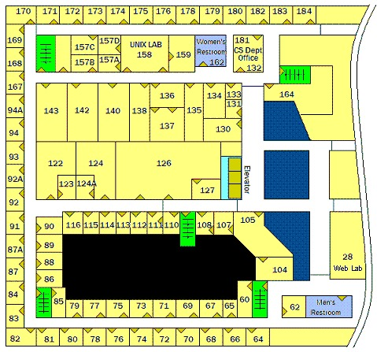

Frequently Asked Questions
- FAQ01: How do I get help if my question is not in this list?
- FAQ02: How do I get a UNIX account for my course?
- FAQ03: How do I get a PC account in the lab?
- FAQ04: How do I check my disk usage?
- FAQ05: How do I avoid trouble from disk quotas?
- FAQ06: How do I log on to CS networks from off-site?
- FAQ07: How do I transfer files to/from my PC?
- FAQ08: How do I create my homepage?
- FAQ09: How do I choose a good password?
- FAQ10: How do I write a CGI script?
- FAQ11: How do I get an alumni account?
- FAQ12: How do I find someone's email address?
- FAQ13: How do I print?
- FAQ14: How do I use remote (IMAP/POP) mail service?
- FAQ15: How do I fix my vt100 windows?
- FAQ16: How do I get a file restored from backup?
- FAQ17: How do I keep from losing my important files?
- FAQ18: Math and CS anti-spam
- FAQ19: Can I use my laptop in the UNIX lab?
- FAQ20: Is there wireless access in the UNIX lab?
- FAQ 21: How to change the forwarding address of an UMB email account
- FAQ22: Map of Science Building Third Floor CS Department
FAQ01: How do I get help if my question is not in this list?
Ask an operator in the "ops" office (S-3-157D) behind the window in the UNIX/PC Lab (S-3-158) or send an email to operator [at] cs.umb.edu or call 617-287-6480.
Please do not include any personal information or images when emailing OPS like UMB ID number
| Monday to Thursday | 9:00am - 9:00pm |
| Friday | 10am - 6:00pm |
| Saturday to Sunday | 12pm - 6:00pm |
Call ahead of time to make sure someone will be there
FAQ02: How do I get a UNIX account for my course?
We have a web based application system but it is important to know that the web account that you use to log into portal.cs.umb.edu is
separate than a UNIX account. The web account is like a gateway to manage your UNIX account but they are separate.
For example, if you were to change your password on your web account, your UNIX account will remain with the same previous password
until you log in through ssh and change it using yppasswd on any of our public hosts.
See an operator if you have any additional questions.
To get a UNIX account for your course there are three scenarios you could be in: you already have an existing UNIX account but have never seen the new web-based application system, you are a new student that needs a new account or you have both a web account and UNIX account.
Existing UNIX account owner
If you already have a Unix account but have not registered with the new Apply program you must go to Portal to register. Be sure to click the checkbox labeled "Select if you already have a Unix account" you will then need to enter your account's username and password along with your UMB email address.
If your username and password match a Unix account you will receive an email at your UMB email address for confirmation. When you click the link in that email you will be registered and will then be able to select your courses for the semester currently available
New students to the departement
The process is very similar to the one above except that you won't be checking off the box labeled "Select if you already have a Unix account". Head over to Portal to register. Enter the fields requested along with your UMB email address.
We will be checking that the username you requested does not match an existing Unix account, in the case that the username is already taken you will be asked to enter another one. Once you have pressed submit you will receive an email at the UMB email address you provided for confirmation. When you click the link in that email you have successfully submitted a request for a new account and will then be able to select your courses for the semester currently available.
Returning User with both web and system account
If you have both accounts you can simply head over to https://portal.cs.umb.edu/registration/login/ and login to sign up for courses.
New PhD student
New PhD student must go through the same process as 'New students to the departement' for the creation of an account as an undergrad. Once you have an account you have to send a request to operator 'at' cs.umb.edu to be promoted to phd student status.
See an operator if you have any additional questions or problems.
FAQ03: How do I get a Windows account in the lab?
Operators make Windows account for all users that have a UNIX account using the same username.
During the first logon session, students will have to change their account's password to a good one of their own.
See FAQ09 for good password creation.
FAQ04: How do I check my disk usage?
You can check your disk usage with the du command.
See man du.
The main thing to know is that the -s flag gives a sum for a subtree without showing every subdir in it.
du -h --max-depth=1 ~
To see the size of files in the current directory use the following command
This will not show the size of an entire directory, use the du command for that.
ls -sh
To remove any directory that too are big and are just taking up space like the .mozilla and .cache you can use the following command.
rm -rf <directory>
You can also remap your .cache directory to go into a nobackup space which does not effect your disk quota. Copy and paste the following into a terminal session to do that:
cd ~
rm -rf .cache
mkdir -p /nobackup/students/$USER/.cache
ln -s !$ .cache
chmod 700 /nobackup/students/$USER
This will delete the entire directory and its content, please verify that there is nothing important before executing.
FAQ05: How do I avoid trouble from disk quotas?
Disk space is a perpetual problem. Nice users can run out of space because others use way too much disk. Therefore we impose disk quotas on student homes and mailboxes.
Note that disk space is provided separately for CS courses and PhD research, so that stuff doesn't count against home usage.
Homes
All student homes must use less than 256 Mb of disk.
All alumni homes must use less than 50 Mb of disk.
The lab directors may refine their policy on quota values (up or down), at any time.
Please FAQ04 on how to manage your usage.
Mailboxes
All student mailboxes must use less than 2 Mb of disk.
In the mail spool, we will impose on students a soft quota of 2 Mb, and a hard quota of 5 Mb.
That means you will be warned if you go over 2 Mb, and that your mail will bounce if you go over 5 Mb.
If necessary, ask an operator how to save mail under your home, or to your PC.
The Quota Mechanism
There are two limits associated with each user, per filesystem: the soft limit and the hard limit.
When usage exceeds the soft limit, you see messages to reduce usage.
When usage exceeds the hard limit, you cannot write to your files. The system will not allow a user to exceed his or her hard limit.
However, a system administrator may set a soft limit (sometimes referred to as a quota) which can be temporarily exceeded by the user. The soft limit must be less than the hard limit.Once the user exceeds the soft limit a timer begins. While the timer is ticking, the user is allowed to operate above the soft limit but cannot exceed the hard limit. Once the user goes below the soft limit, the timer gets reset. However, if the user's usage remains above the soft limit when the timer expires, the soft limit is enforced as a hard limit. By default, the soft limit timer is seven days. The value of the timer is shown by the timeleft field in the
quotacommand.For example, let's say a user has a soft limit of 10,000 blocks and a hard limit of 12,000 blocks. If the user's block usage exceeds 10,000 blocks and the timer is also exceeded (more than seven days), the user will not be able to allocate more disk blocks on that file system until his or her usage drops below the soft limit.
Reducing Disk Space Usage
It is a big win to compress text files with
gzip.
Seeman gzip.
Also, you should be copying files out to your PC or USB drive.
Over Quota
At login time, before the prompt is displayed, you may see a message from the quota command about being over and having to reduce your usage by so much. You can see that any time by running the quota command. If you are over your hard limit and cannot write into your home or mailbox, recall that each host has a
/tmpdirectory where you can do scratch work. This can help you examine archives or compressed files that you cannot uncompress in your home. Also recall that your mailbox is an ordinary file,/var/spool/mail/$USERthat you can copy from and to. Thank you for your cooperation towards fairness and better service for all.
Nobackup Area
The NoBackup Area is a terabyte available for storing big files. Per its name, it does not get backed up.
You can use this space by making your own directory by doing the following:cd /nobackup/students
mkdir <username>Change the directory permissions to be unavailable to others, since it is a shared space:
chmod 700 <username>
FAQ06: How do I log on to CS networks from off-site?
Use Secure Shell (ssh) to connect to users.cs.umb.edu or whatever hosts or you were told to use.
We recommend the free PuTTY package.
FAQ07: How do I transfer files to/from my PC?
Use sftp, the secure version of the File Transfer Protocol.
A PC client program, psftp, comes along with PuTTY.
FAQ08: How do I create my homepage?
We support homepages addressed by http://www.cs.umb.edu/~username, where username is your UNIX login.
Your homepage must be named index.html and be in a publicly readable directory named public_html under your home directory.
Everything in your webpage is visible to everyone on the Internet. Do not put any personal information like phone number. Your email address shoul be in the format of
name"at"cs(dot)umb(dot)edu.
FAQ09: How do I choose a good password?
A good password is at least six letters and is not in any dictionary or any list of people or place names. It combines numbers, upper and lowercase letters, and at least one non-numeric, non-alphabetic symbol:
(~<>|\#$%^&*)
Passwords are too easy to guess if they contain:
- any part of your name or name+initials or name+date
- any part of any name found in the password file
- names or words that are backwards
- words with mixed capitalization ("NoTHarD")
- words with cute misspellings ("WarezD00D")
- words with a single digit added (like "pascal1")
- words with substituting '1' for 'i' or '0' for 'o' ("M1ll10n")
- two small words put together ("badbad", "baddab")
- strings that are all numbers ("123321")
- short or repeating nonsense words ("glup" or "frgfrg")
- acronyms or scrambled words ("umbcslab" or "aajv011")
- any systematic, well-adhered-to algorithm whatsoever (for example, suggestions patterned after something in a book)
One way to choose an OK password is to pick a phrase or song and use the first letters of the words, with some non-letter characters. Do not confuse "dictionary" with Webster's. Cracking software comes with huge lists of words in many languages, real and imaginary, and English transliterations of languages in other alphabets: Russian, Mandarin, Swahili, Vietnamese, Arabic, Farsi, Hindi; all the words in the Koran; the CIA World Factbook's list of every place name in the world; car names, people names, botanical names, science fiction names, Klingon words; and just about anything you could think of. If it has been written down anywhere in the world, it's probably in a cracking dictionary.
Examples of bad passwords:
- alec7: it's based on the users name (& it's too short anyway)
- tteffum: based on the users name again
- gillian: girlfiends name (in a dictionary)
- naillig: ditto, backwards
- PORSCHE911: it's in a dictionary
- 12345678: it's in a dictionary(and people can watch you type it easily)
- qwertyui: ditto
- abcxyz: ditto
- 0ooooooo: ditto
- Computer: just because it's capitalized doesn't make it safe
- wombat6: ditto for appending some random character
- 6wombat: ditto for prepending some random character
- merde3: even for french words
- mr.spock: it's in a sci-fi dictionary
- zeolite: it's in a geological dictionary
- ze0lite: corrupted version of a word in a geological dictionary
- ze0l1te: ditto
- Z30L1T3: ditto
Any password derived from any dictionary word (or personal information), modified in any way, constitutes a potentially guessable password.
FAQ10: How do I write a CGI script?
Users may invoke CGI scripts from their home pages by following these guidelines:
-
Make a script or program that prints good, legal HTML to its STDOUT. You should run your program under the shell and check its output before wiring it up into your home page. Until it gives good output you'd be wasting your time fooling with having the web server call it. Run weblint against it.
-
Refer to your program by way of our CGI server. For example,
http://cgi1.cs.umb.edu/~username/myprog.cgi. That hostname cgi1 is an alias for a box with a web server that can see your home page and is configured to run CGI programs. We don't allow CGI to run on the main web server. That is so that in case some program goes nuts it won't drag down the whole site. -
The error log of the httpd on cgi1 is
/data/httpd_logs_cgi1/error_log. Users may read that file in pursuit of their errors. -
CGI scripts can introduce security holes or be CPU hogs. Please be very careful in using them: follow a good cookbook and do not "give away the store." Thanks.
FAQ11: How do I get an alumni account?
The Department Computer Science at UMass Boston supplies accounts to enrolled students, to graduates of the CS program, and to faculty and research associates.
If your account is currently shut off, we will re-enable it while you either (1) apply for an alumni account as below, or (2) copy out your files before the account is deleted.
Please advise us which you will do, by sending email to operator(at)cs(dot)umb(dot)edu.
Alumni accounts must be authenticated, and have a valid address. We invite and require you to authenticate yourself by U.S. Mail. Please mail us a photocopy of your driver's license (in lieu of National ID Card), or your passport or some official picture ID. You should obliterate your SSAN, as we don't want to know it.
Mark your photocopy with (1) your login name, (2) the date and type of degree you received from UMass Boston, and (3) your current U.S. Mail address. Mail to:
Computer Science Alumni Sysadmin
UMass-Boston
100 Morrissey Blvd.
Boston, MA 02125-3393
We will keep your info off-line, but may share it with the Alumni Office so they can beg you for money.
The lab directors have required authentication since Nov. 1, 2002.
Users who registered have valid login shells.
Other old friends do not, and unused accounts get deleted routinely.
Please keep your account active by logging in to alumni.cs.umb.edu at least every quarter-year, and keep your mailbox small.
Thank you!
FAQ12: How do I find someone's email address?
Local users have the address username@cs.umb.edu.
Faculty have aliases First.Last@cs.umb.edu.
The finger program uses fuzzy matching against the passwd database, and is available on most of our hosts.
You can use the following to send an email on a CS Ubuntu host from your CS email:
$ alpine <username>@cs.umb.edu
FAQ13: How do I print?
Once you have a Unix and Windows account, the CS department automatically grants you 250 pages to print on the printer lj-158 we host per semester.
You can check your quota status in the computer lab by going to cups2.cs.umb.edu.
How to print to the student laser printer(s) (e.g. lj-158) can vary depending on the environment (Windows or Linux) you are currently on.
-
If you are on a linux machine in the Unix/PC lab or connected to one of our servers you can use the
lprcommand.lpr <filename or file path> -
If you are on one of our Windows machines and are about to print something like a
.pdfdocument, please read the windows dialog boxes and make sure that there is nothing out of the ordinary. Open the printable file and on that window: hold downCtrl-P
Useful Commands
Let say that you are on one of our Unix labs machines and you sent a print job and it still has not printed. You can check the printer queue by using;
lpq -a
If you don't want to wait and want to take your print job off the queue you can run:
lprm -P lj-158 <job id>
For the windows side to delete your file do the following:
- Click Start --> Devices and Printers --> Double Click the printer to see queue
- Right Click your job and click Cancel to take it off the queue
FAQ14: How do I use remote (IMAP/POP) mail service?
If you have an internet connection, you can retrieve your mail from our mail machine using Microsoft Outlook, Netscape, Eudora, or any other PC mail client. See your software for instructions.
Our POP server is at pop.cs.umb.edu.
Our IMAP server is at imap.cs.umb.edu.
Our SMTP server is at smtp.cs.umb.edu.
Please use these aliases as they are guaranteed to work.
Our POP and IMAP Servers are not reachable directly from the internet. As a CS users you can tunnel these protocols.
Real Soon Now we will have secure mail servers.
Our SMTP server only handles outbound mail for clients on our LAN. Please do not configure your client to use it from home, unless our postmaster has told you to do so: your mail will be refused, and the log messages are annoying. If your internet connection is through an ISP, please use their SMTP server for your outbound mail. If they don't offer one, get another ISP. We might make an exception in an extreme case, but we haven't had to yet, since all ISP's so far have SMTP servers.
FAQ15: How do I fix my vt100 windows?
When you log in, you may have to tell UNIX what kind of terminal you are at, if you want things like emacs and vi to work correctly. Most folks use a PC running some ssh client such as putty. Most ssh client programs emulate (pretend to be) vt100 terminals. The vt100 was DEC's popular implementation of the ANSI terminal spec. Check your comm program or its docs to see what your choices are. If you don't know or care, then vt100 is the best choice. On the UNIX side, you can check the setting of terminal type by
echo $TERM
That should agree with your ssh client. If not, you can tell UNIX the terminal type being emulated, so:
set TERM=vt100
If you check your ~/.login file, you will see a section where the terminal type gets set.
If that code isn't getting your terminal type set correctly for you, you can comment it all out and replace it with one or more simple declarations that do.
On some UNIX systems, the default behavior for tabs is to print them literally.
If you see output all messy, tabs may not be agreeing with your terminal emulator.
The command stty -tabs tells UNIX not to send literal tabs, but to expand them into a bunch of space characters.
You can put that into your .login file if it works for you and you want that all the time.
Window Size UNIX assumes a vt100 is 24 rows x 80 columns.
If you like a larger window, you can adjust UNIX's notion of its size with the script /usr/local/bin/fix.vt100.
It takes an argument that is the number of rows (lines) in the window.
For example, fix.vt100 35 fixes up a vt100 for 35 lines.
The fix.vt100 command is a "self-documenting Bourne shell script."
FAQ16: How do I get a file restored from backup?
We do tape backups daily, in the dark of night.
To request a file restore, send email to operator(at)cs(dot)umb(dot)edu with the following information.
For current work, including course directories:
- The name of the file.
- What directory the file was in.
- When you last edited the file, or saw it in good condition; yesterday, last month, etc.
An operator will restore the file(s) into the directory RESTORE under your home, usually by the next day.
Please recover from there what you need, and delete what you don't.
FAQ17: How do I keep from losing my important files?
Please know: we don't promise to keep all your homework archived for you forever. Do occasionally make your own back up to a USB.
-
Short Term
Backups are usually done around 00:30. A file created during the day and deleted shortly thereafter is gone. We cannot restore it. You might copy very critical course files to your home, since homes and courses are generally on different disks. You might use a script to copy a file to your home before you edit it, like many examples to be found on the net.
-
Long Term
You should be copying files out to your own PC and/or to your own flash drive and such. By your files we mean your home, web page, homework, etc. The zip command makes nicely portable, compressed archives. We routinely trash old semester trees to make room for new classes, so clean up and copy out the stuff that is precious to you. Do it on some schedule but especially at the end of semester.
FAQ18: Math and CS anti-spam
-
Systems Use Realtime Blackhole Lists (dnsrbl)
Please know that we have recently become very much more aggressive in our anti-spam measures. In particular, the mail daemons on the math and cs mail servers now decline to accept mail from hosts that are listed as bad guys by spamcop or spamhaus. Please see:
We now drop over 50,000 connections per day, drastically reducing the number of messages to be scanned for virus and spam.
-
SpamAssassin 'spamd' Deployed
We now have spamd running on three of the new SunFire 4200's under linux. There is a local script to invoke the spamc client side, and the prototypical
.procmailrcfile is updated to use it.Under the old setup, and for the near future, SpamAssassin is invoked by the sytem on each message that comes in. That sub-optimal method will be dropped about as soon as we can suppose that everyone has changed over to spamc/spamd.
-
New Prototypical Procmailrc File
If you already have a procmail filter set up, then you will want to merge it with, or replace it with, the latest recommendation.
Please see /usr/local/umb_proto_dot/.procmailrc.
If you do not have a procmail filter yet, you may install one by doing the following actions in the shell.
You should review the procmailrc file before setting up your .forward file.
cd mkdir -p .procmail mkdir -p mail echo '"|/usr/local/bin/procmail #'$USER'"' > .forward chmod go-w . .procmail .procmailrc .forward
At this point your .forward should contain, for example, "|/usr/local/bin/procmail#rickm|" -- including the double quotes and your username after the #.
New mail will be sorted into one of the files mail/spam.* or your system mailbox.
If you want to be conservative initially, you can see where to change the code to save even high-score spam.
You will want to watch your ~/.procmail/log file to be sure that things are going as expected.
Once you are comfortable, you will want to turn off verbosity in the .procmailrc file.
Please report bugs by email to operator(at)cs(dot)umb(dot)edu.
FAQ19: Can I use my laptop in the CS Labs?
Yes, there are some loose ethernet cables in all CS labs.
To be able to connect to the CS local network, please email operator(at)cs(dot)umb(dot)edu from your lab account or stop by the OPs Room in S-3-157D with your student ID telling us the laptops's MAC (ethernet) address.
We will enter that into our DHCP server's table of good guys, and you will be able to get an address.
FAQ20: Is there wireless access in the UNIX lab?
Yes there is WiFi access through out the Campus. To connect you will need you UMB email and password.
FAQ 21: How to change the forwarding address of an UMB email account
Log onto webmail.umb.edu using your credentials and under settings (the wheel symbol), search for the keyword "forwarding". This will bring you to the forwarding screen to change the forwarding address.
FAQ22: Map of Science Building Third Floor CS Department
